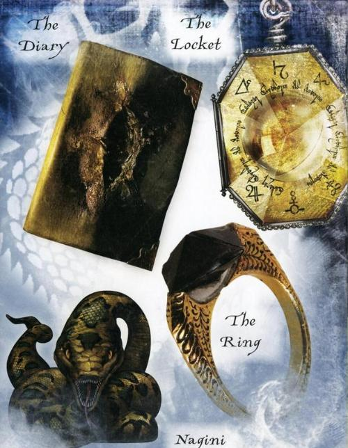
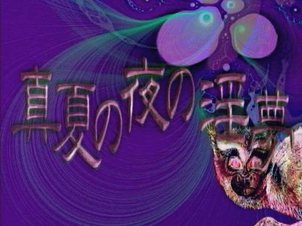

数字
这个页面讲述了一些我喜欢的特别数字
它们也许会被用于本网站的任何地方
你知道的太多了
233 欢乐数字
含义和起源：
233是一个应用广泛的数字，用于代表大笑，有时也用于表示嘲讽。
当它用来表示欢乐的愿意时，可以添加任意个3，用于代表笑得越持久。

233并不来自于日语空耳，而来自于猫扑论坛的一个捶地大笑表情；
它原来的序号是233, 因此233代指这个表情，然而现在已经变成11号。
本站应用：
本站网址的端口号是233.
你知道的太多了
7 魔法数字
含义和起源：
7不是一个互联网梗数字，但是啦哇嘻本人很喜欢使用的数字。
它起源于JK·罗琳的《哈利·波特》系列，原始作者将魔法数字7融入故事中的多个情节。
例如You-Know-Who的7个魂器，霍格沃兹魔法学院的7个年级，复方制剂的7个成分等。
本站应用：
我的Minecraft ID其一“halfBlood7Prince”中插入了数字7；
在涉及到书面用语时将“Lawaxi”后面加入“Himeself”，有7个字母等。
你知道的太多了
1919 inm数字
含义和起源：
1919是一个inm数字，是“イクイク”的空口音译，意译为中文应为“要去了”。
出自于日本GV《真夏の夜の淫夢》系列中，野兽先辈高潮时发出声音：“イキスギイクゥ！イクイクゥ！ンアッー！”。
本站应用：
本站有另一个开放的端口，“1919”，现在它是元素收藏图片的索引站：
你知道的太多了
931 inm数字
含义和起源：
931是日语“くさい”的谐音，形容“臭”，多用于形容inm圈作品。
另外，经过931÷(810＋3)≈1.14514的迫真解释，这个数字经常和810（指“野兽”）一起出现而显得更臭。
本站应用：
本站有另一个开放的端口，“931”，现在它是一个公共的在线聊天室：